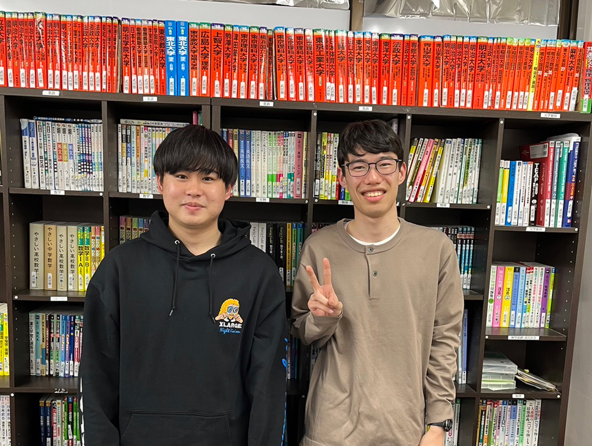
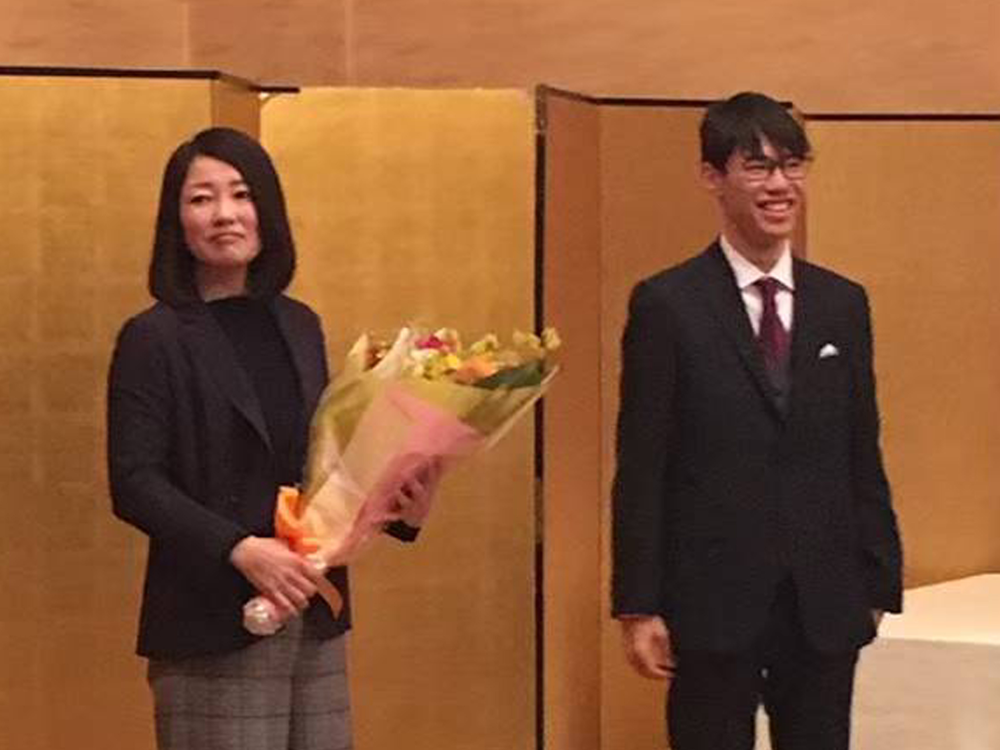
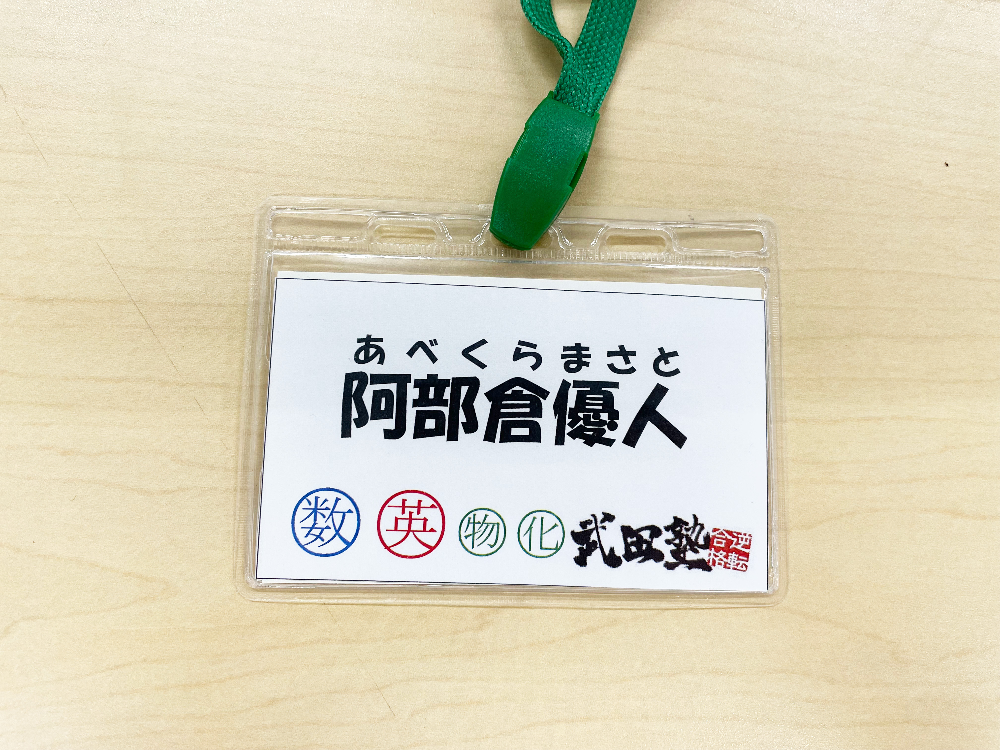

PROFILE
past students
山口草一郎、森朋弘、阿積奏人、鹿島百花、
古茶杏梨、
江上大晴、明石有希菜、楯岡佑斗、
鶴岡侑弥
subject
英語、数1A2B、物理、化学、
history
現役で東京工業大学に進学。 その実績と人間性を買われ、同期の荘司に武田塾に誘われる。 多忙にも関わらず、無理難題な生徒数と、難関志望の生徒を任され、地獄の日々 中条に進捗を聞かれた際は、「分かんねぇだろこいつ」と思いながら答える やっと娑婆に出て解放と思いきや、ド田舎四国の徳島に配属先が決まり、第2の地獄行き確定。
MESSAGE
中条太一
阿部倉君、ご卒業おめでとうございます！ 中条が赴任してから、阿部倉君には実績出せそうな重たい生徒をお願いさせていただきました。 合格まで導いていただき本当にありがとうございます！ 阿部倉君に任せておけば何とかなるでしょって思ってたので、基本完全放置でした笑 さて、これからは社会人として働かれますね 大変な日々を過ごされると思います。 時には息を抜きながら頑張ってくださいね 陰ながらではありますが、今後のご活躍を応援してます！
荘司瑛紀
まずは今まで働いてくれてありがとう！ 正直無理やり誘った形だと思っているけれども最後まで しっかり生徒を見てくれてとても助かりました。 特に最初の方は阿部倉自身も忙しいはずなのに、 ギリギリまでコマを持ってくれたりして感謝です。 阿部倉はとても真面目なので順風満帆な生活を送るのではないかと思います。 また数年後とかに中学でもここのコミュニティでもどっちでもいいけど、 ぜひ仕事の話とか聞ければ面白いなと思います。 なので誘ったら来てください！
藤江里駆
あべくらさん。 卒業おめでとうございます。 いつもいかついパソコン持ってたのが印象的です。 別件であのパナソニックのパソコン触る機会があったのですが、 操作(特にマウス操作)難しかったです。 慣れるのに1週間くらいかかっちゃいました。 忙しいにも関わらずちゃんと特訓に来るあたり流石でした。 社会人になると辛いことも多いです！ 覚悟してください！
在原弘大
今までありがとうございました！ 僕が阿部倉さんを知ったきっかけは、僕が塾生のとき荘司さんの代講として 阿部倉さんが担当してくださったことがきっかけでした。 僕は塾生の頃から「阿部倉さん＝最強」と思っています。 バイト中にも何度か阿部倉さんとお話する機会があり、 僕が持っていない観点から話してくださるため、 会話を通して阿部倉さんへの尊敬の念は深まるばかりでした。 長年お疲れ様でした。
植田佳和侑
ご卒業おめでとうございます！一度特訓終わりに阿部倉さんが大学でどんな研究をしているのか聞いたことがありましたが、他大学から来た同じ研究室の人の話を聞いたときに、阿部倉さんは大学での研究にとても情熱を持っていてすごいなと感じたことを覚えています。徳島でも頑張ってください！応援しています。
GALLERY
- 
- 
- 